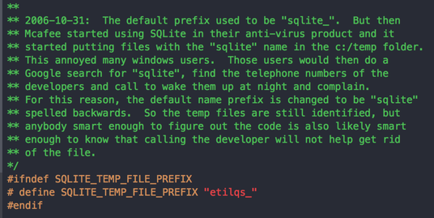

Note
tl;dr: Reproducibilty is a noble cause and scientific software a promising vessel. But excess of reproducibility can be at odds with the housekeeping required for good software engineering. Code that “just works” should not be taken for granted.
This post advocates for a progressive consolidation effort of scientific code, rather than putting too high a bar on code release.
Titus Brown recently shared an interesting war story in which a reviewer refuses to review a paper until he can run the code on his own files. Titus’s comment boils down to:
“Please destroy this software after publication”.
Note
Reproducible science: Does the emperor have clothes?
In other words, code for a publication is often not reusable. This point of view is very interesting from someone like Titus, who is a vocal proponent of reproducible science. His words triggered some surprises, which led Titus to wonder if some of the reproducible science crowd folks live in a bubble. I was happy to see the discussion unroll, as I think that there is a strong risk of creating a bubble around reproducible science. Such a bubble will backfire.
Replication is a must for science and society
Science advances by accumulating knowledge built upon observations. It’s easy to forget that these observations, and the corresponding paradigmatic conclusions, are not always as simple to establish as the fact that hot air rises: replicating many times the scientific process transforms an evidence into a truth.
One striking example of scientific replication is the on-going effort in psychology to replay the evidence behind well-accepted findings central to current line of thoughts in psychological sciences. It implies setting up the experiments accordingly to the seminal publications, acquiring the data, and processing it to come up to the same conclusions. Surprisingly, not everything that was taken for granted holds.
Note
Findings later discredited backed economic policy
Another example, with massive consequences on Joe Average’s everyday, is the failed replication of Reinhart and Rogoff’s “Growth in a Time of Debt” publication. The original paper, published in 2010 in the American Economic Review, claimed empirical findings linking important public debt to failure of GDP growth. In a context of economical crisis, it was used by policy makers as a justification for restricted public spending. However, while pursuing a mere homework assignment to replicate these findings, a student uncovered methodological flaws with the paper. Understanding the limitations of the original study took a while, and discredited the academic backing to the economical doctrine of austerity. Critically, the analysis of the publication was possible only because Reinhart and Rogoff released their spreadsheet, with data and analysis details.
Sharing code can make science reproducible
A great example of sharing code to make a publication reproducible is the recent paper on orthogonalization of regressors in fMRI models, by Mumford, Poline and Poldrack. The paper is a didactic refutation of non-justified data processing practices. The authors made their point much stronger by giving an IPython notebook to reproduce their figures. The recipe works perfectly here, because the ideas underlying the publication are simple and can be illustrated on synthetic data with relatively inexpensive computation. A short IPython notebook is all it takes to convince the reader.
Note
Sharing complex code… chances are it won’t run on new data.
At the other end of the spectrum, a complex analysis pipeline will not be as easy to share. For instance, a feat of strength such as Miyawaki et al’s visual image reconstruction from brain activity requires complex statistical signal processing to extract weak signatures. Miyawaki et al shared the data. They might share the code, but it would be a large chunk of code, probably fragile to changes in the environment (Matlab version, OS…). Chances are that it wouldn’t run on new data. This is the scenario that prompted Titus’s words:
“Please destroy this software after publication”.
I have good news: you can reproduce Miyawaki’s work with an example in nilearn, a library for machine learning on brain images. The example itself is concise, readable and it reliably produces figures close to that of the paper.
Note
Maintained libraries make feats of strength routinely reproducible.
This easy replication is only possible because the corresponding code leverages a set of libraries that encapsulate the main steps of the analysis, mainly scikit-learn and nilearn here. These libraries are tested, maintained and released. They enable us to go from a feat of strength to routine replication.
Reproducibility is not sustainable for everything
Thinking is easy, acting is difficult — Goethe
Note
Keeping a physics apparatus running for replication years later?
I started my scientific career doing physics, and fairly “heavy” physics: vacuum systems, lasers, free-falling airplanes. In such settings, the cost of maintaining an experiment is apparent to the layman. No-one is expected to keep an apparatus running for replication years later. The pinnacle of reproducible research is when the work becomes doable in a students lab. Such progress is often supported by improved technology, driven by wider applications of the findings.
However, not every experiment will give rise to a students lab. Replicating the others will not be easy. Even if the instruments are still around the lab, they will require setting up, adjusting and wiring. And chances are that connectors or cables will be missing.
Software is no different. Storing and sharing it is cheaper. But technology evolves very fast. Every setup is different. Code for a scientific paper has seldom been built for easy maintenance: lack of tests, profusion of exotic dependencies, inexistent documentation. Robustness, portability, isolation, would be desirable, but it is difficult and costly.
Software developers know that understanding the constraints to design a good program requires writing a prototype. Code for a scientific paper is very much a prototype: it’s a first version of an idea, that proves its feasibility. Common sense in software engineering says that prototypes are designed to be thrown away. Prototype code is fragile. It’s untested, probably buggy for certain usage. Releasing prototypes amounts to distributing semi-functioning code. This is the case for most code accompanying a publication, and it is to be expected given the very nature of research: exploration and prototyping [1].
No success without quality, …
Note
Highly-reliable is more useful than state-of-the-art.
My experience with scientific code has taught me that success require quality. Having a good implementation of simple, well-known, methods seems to matter more than doing something fancy. This is what the success of scikit-learn has taught us: we are really providing classic “old” machine learning methods, but with a good API, good docs, computational performance, and stable numerics controlled by stringent tests. There exists plenty of more sophisticated machine-learning methods, including some that I have developed specifically for my data. Yet, I find myself advising my co-workers to use the methods in scikit-learn, because I know that the implementation is reliable and that they will be able to use them [2].
This quality is indeed central to doing science with code. What good is a data analysis pipeline if it crashes when I fiddle with the data? How can I draw conclusions from simulations if I cannot change their parameters? As soon as I need trust in code supporting a scientific finding, I find myself tinkering with its input, and often breaking it. Good scientific code is code that can be reused, that can lead to large-scale experiments validating its underlying assumptions.

Sqlite is so much used that its developers have been woken up at night by users.
You might say that I am putting the bar too high; that slightly buggy code is more useful than no code. But I frown at the idea of releasing code for which I am unable to do proper quality assurance. I may have done too much of that in the past. And because I am a prolific coder, many people are using code that has been through my hands. My mailbox looks like a battlefield, and when I go the coffee machine I find myself answering questions.
… and making difficult choices
Note
Craftsmanship is about trade-offs
Achieving quality requires making choices. Not only because time is limited, but also because the difficulty to maintain and improve a codebase increases much quicker than the numbers of features [3]. This phenomena is actually frightening to watch: adding a feature in scikit-learn these days is much much harder than what it used to be in the early days. Interactions between features is a killer: when you modify something, something else unrelated breaks. For a given functionality, nothing makes the code more incomprehensible than cyclomatic complexity: the multiplicity of branching, if/then clauses, for loops. This complexity naturally appears when supporting different input types, or minor variants of a same method.
The consequence is that ensuring quality for many variants of a method is prohibitory. This limit is a real problem for reproducible science, as science builds upon comparing and opposing models. However, ignoring it simply leads to code that fails doing what it claims to do. What this is telling us, is that if we are really trying to do long-term reproducibility, we need to identify successful and important research and focus our efforts on it.
If you agree with my earlier point that the code of a publication is a prototype, this iterative process seems natural. Various ideas can be thought of as competing prototypes. Some will not lead to publication at all, while others will end up having a high impact. Knowing before-hand is impossible. Focusing too early on achieving high quality is counter productive. What matters is progressively consolidating the code.
Reproducible science, a rich trade-off space
Note
Verbatim replication or reuse?
Does Reinhart and Rogoff’s “Growth in a Time of Debt” paper face the same challenges as the manuscript under review by Titus? One is describing mechanisms while the other is introducing a method. The code of the former is probably much simpler than that of the latter. Different publications come with different goals and code that is more or less easy to share. For verbatim replication of the analysis of a paper, a simple IPython notebook without tests or API is enough. To go beyond requires applying the analysis to different problems or data: reuse. Reuse is very difficult and cannot be a requirement for all publications.
Conventional wisdom in academia is that science builds upon ideas and concepts rather than methods and code. Galileo is known for his contribution to our understanding of the cosmos. Yet, methods development underpins science. Galileo is also the inventor of the telescope, which was a huge technical achievement. He needed to develop it to back his cosmological theories. Today, Galileo’s measurements are easy to reproduce because telescopes are readily-available as consumer products.
Standing on the shoulders of giants — Isaac Newton, on software libraries
| [1] | To make my point very clear, releasing buggy untested code is not a good thing. However, it is not possible to ask for all research papers to come with industial-quality code. I am trying here to push for a collective, reasoned, undertaking of consolidation. |
| [2] | Theory tells us that there is there is no universal machine learning algorithm. Given a specific machine-learning application, it is always possible to devise a custom strategy that out-performs a generic one. However, do we need hundreds of classifiers to solve real world classification problems? Empirical results [Delgado 2014] show that most of the benefits can be achieved with a small number of strategies. Is it desirable and sustainable to distribute and keep alive the code of every machine learning paper? |
| [3] | Empirical studies on the workload for programmers to achieve a given task showed that 25 percent increase in problem complexity results in a 100 percent increase in programming complexity: An Experiment on Unit increase in Problem Complexity, Woodfield 1979. |
I need to thank my colleague Chris Filo Gorgolewski and my sister Nelle Varoquaux for their feedback on this note.
comments powered by Disqus